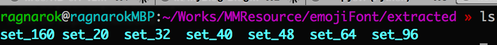
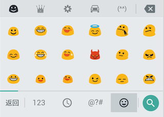
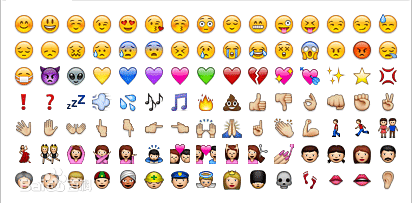
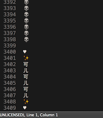

先说结论，在android4.4以前，无法使用像苹果那样的emoji字体样式，最简单的解决方案是使用ImageSpan配合SpannableString，而在4.4及之后的版本，则可以直接采用类似iOS/OSX的方案进行快速渲染。
Apple Color Emoji
Emoji表情，最初是从日本的“绘文字”演化过来，在没有正式定下规范之前，日本的三大电信运营商，NTT DoCoMo，au/KDDI，Softbank都各自有一套关于Emoji的编码规范，而且在这个时候，每个Emoji表情对应的表情图片也是没有统一规范的。这时候，应用最广泛的是应该的属于日本软银（Softbank）的Softbank编码了，在iOS系统的早期的版本上，采用的也是这个编码规范。
后来，在2010年10月，随着Unicode6.0的发布，Emoji的编码以及对应的表情图片正式被规范化，核心Emoji表情包含722个Emoji编码。而到了Unicode 7.0（2014年6月发行）之后，更多的Emoji表情被加入了进来，包括一些其他比较偏门的Emoji表情组，例如Webdings，Wingdings，也被编入了Unicode 7.0规范，此时，整个Emoji编码集合已经有大概1000个左右，而在表情图片的规范上，除了我们常见的ios style之外，还有Android Style，Twitter Style等，在这里，有一份比较详细的Emoji表情列表，包含了不同的表情样式以及对应的编码。
而在iOS系统上，在Unicode 6.0规范出来之前，原来也是采用Softbank编码（iOS 4以及之前版本），而Unicode 6.0规范之后（iOS 5以及之后的版本，或者OSX Lion之后的系统），则改为使用了Unicode编码。
那么，iOS/OSX是怎么把这些Emoji表情渲染出来的呢？
在OSX 10.7之后，OSX引入Color Emoji，这是苹果第一次在自己的桌面操作系统引入Emoji，用户可以直接在Mail或者iMessage之类的客户端直接输入Emoji字符。OSX（其实iOS也是用基本相同的实现）上的实现是通过一个叫做Apple Color Emoji的字体来实现的，这个字体文件被放在了/System/Library/Fonts/Apple Color Emoji.ttf目录中。关于这个字体的细节，在Typophile中曾经有进行过相关的讨论，最后有工程师使用逆向工程分析了这个字体文件的格式，得出来的结论是，苹果扩展了OpenType标准，在ttf文件中直接嵌入了包含Emoji表情的图片，然后输入的时候通过根据Emoji表情的Unicode编码，找到对应的图片，将表情渲染出来。
国外的程序员总是不用加班，因此他们很有空的研究了Apple Color Emoji的具体实现。前面提到，有工程逆向分析了Apple Color Emoji的采用的技术，下面我们来具体操作一下，最后我们可以提取出Apple Color Emoji.ttf中的所有Emoji图片，以下的流程来自Typophile的一篇文章：
- 安装FontTools，这是一个将ttf文件转换成xml，或者将xml转换成ttf文件的工具，使用python编写，如果已经安装了pip，可以通过
pip install FontTools来安装。 - 上述文章中作者提供了一个FontTools的扩展，叫做
sbix_code.zip，下载之后解压缩，将里面的文件复制到FontTools在python的site-packages目录下，如果是在OSX上，假设你使用的是python 2.7，那一般是在/Library/Python/2.7/site-packages/FontTools目录下。 - 该作者还提供了一个使用的demo：sbix_demo.zip，解压缩之后编辑里面的
extractSbixImages.py，修改如下：
#! /usr/bin/env/python
from fontTools.ttLib import TTFont
from os.path import exists, join
from os import makedirs
def main():
f = TTFont("Apple Color Emoji.ttf")
if f.has_key("sbix"):
sbix = f["sbix"]
for bs in sbix.bitmapSets.itervalues():
setpath = join("extracted", "set_%i" % bs.size)
if not exists(setpath):
makedirs(setpath)
print "Writing bitmap set to <%s>" % setpath
for bm in bs.bitmaps.itervalues():
if bm.imageFormatTag is not None:
filename = join(setpath, "%s.png" % bm.glyphName)
pf = file(filename, "wb")
pf.write(bm.imageData)
pf.close()
else:
print "Font has no sbix table."
if __name__ == "__main__":
main()
其中"Apple Color Emoji.ttf"请改成Apple Color Emoji.ttf这个文件对应的目录
- 执行脚本，然后我们看到在同目录下多了一个叫做
extracted文件夹，里面分别存放着不同分辨率的Emoji表情图片：

set_**目录分辨对应不同的分辨率，可以看出，Apple Color Emoji.ttf这个字体内嵌了多达8中不同分辨率的Emoji图片，难怪这个字体文件的大小达到了34M。
非常感谢这位程序员的工作，使得我们能够一窥这个字体的大致实现，但是很可惜，这个实现是苹果自己的私有标准，没有合入到OpenType的正式标准中，而苹果官方对这里的实现也没有更多的资料，所以具体的技术标准，目前暂时找不到更加详细的资料。
Google Extension
Google一直以来都是程序员的救星，在Apple Color Emoji推出多年之后，在2013年，Google终于也推出了自己的开源Color Font标准：Open Standard Font Fun for Everyone ，Google同样扩展了OpenType的标准，并且提供了一个开源的实现：color-emoji。Google通过以下方式扩展OpenType，使其支持Color Emoji:
- 复用在ttf文件结构中的EBDT/EBLC表，直接内嵌Emoji图片的ARGB信息到这两个表当中，根据Google的标准，目前采用的是每个像素24位来存储，以BGRA顺序存储。值得一提的是，在ttf文件中，这两个表本来就是设计用于内嵌图片数据的，用于小分辨率字体的渲染，本来一般每像素只用8位存储，因此只能存储黑白图片，详细可以看下微软的官方资料，不过在这种情况下，内嵌的图片是未经压缩的。
- 另外一种方法是Google在ttf文件中新增了两个表，叫做CBDT/CBLC，在这两个表中可以存储经过压缩的图片格式，目前只支持PNG这一种格式。
注：ttf文件的格式大致是以表为单位存储各种不同的数据，关于ttf文件的格式，可以查看微软的官方资料
可以看出，Google的实现大致也苹果的类似，都是内嵌了图片在ttf文件中。而在Google提供的开源实现当中，主要包括以下几个项目的扩展：
- freetype的扩展，Google扩展了freetype这个库，使其支持Google的ttf扩展
- skia，支持freetype扩展之后的字体解析输出
- cairo，支持了freetype扩展之后的输出，并且对于不能渲染的状况，fallback成使用Xlib作为后端(cairo也是和skia一样的2D矢量绘图库，可以选择多个后端，例如选择OpenGL为后端可以实现硬件加速)
其中，这个项目的freetype以及skia的实现被带入了Android 4.4中，也就是说，在Android 4.4之后的版本，我们终于可以像iOS一样使用Color Emoji Font了！！
Using in Android
上文提到，在Android 4.4之后，Google终于支持了Color Emoji Font，实际上，如果你用的是Google输入法，则可以发现在这个面板上输入到所有Google Style的Emoji表情：

但是，很明显，Google提供的Emoji字体的样式实在是太丑了，很多人还是喜欢原来苹果的Emoji样式：

既然Android 4.4之后新增了Color Emoji Font的支持，根据上面的叙述，我们是否可以自己制作一个iOS Style Emoji字体给我们使用呢，答案当然是可以了，在xda论坛上，已经有人进行了这种尝试，原理是利用OSX中的Apple Color Emoji.ttf提取出来的图片，然后使用FontTools以及color-emoji项目中的相关脚本即可生成对应的ttf文件。
由于整个生成过程比较复杂，涉及比较多的依赖，有兴趣的可以看下color-emoji项目中的example的Makefile文件的内容，可以看到每一步是怎么生成的，在这里由于篇幅有限就不再赘述了。根据此方法生成的ttf文件，大家可以在这里下载
在生成了这个emoji字体文件之后，我们就可以直接在android中使用了，有以下两种方式：
- root了手机之后，更改系统的字体配置文件，使其作为系统的默认emoji字体。
- 在TextView中使用setTypeface来设置字体，只要TextView中包含的内容含有emoji指定的unicode编码，就可以直接显示emoji表情了。
性能对比
对比起使用SpannableString那一套，直接通过setTypeface来显示emoji文字的性能差距究竟有多少呢？接下来我们来简单的测试一下。
在测试用例的选择方面，我们选择一条3000多行的emoji表情字符串，算是一个非常极端例子（每个表情后面跟上一个换行符）：

测试基准为，从startActivity开始，到包含表情的Activity的中展示emoji的TextView第一次调用dispatchDraw方法为止所消耗的时间，测试的环境为Nexus 5，Android 5.0，测试10次，计算平均时间：
- 使用Emoji Font，平均时间为433ms
- 使用SpannableString（不带cache），平均时间为9457ms
- 如果SpannableString带上cache之后，可以省去了重复setSpan的耗时了，此时的平均时间为8357ms
可以看出，Emoji Font比SpannableString的方案快了一个数量级，而且即使带上cache，使用SpannableString出来的效果也没有想象中好，究其原因，或许是由于在绘制时，getSpans操作中的反射消耗了大量时间。
Backport to pre-KitKat
Color Emoji Font是Android4.4才加上的新功能，那对于4.4之前的版本，有没有办法也能使用Emoji Font呢，我想到了两点，但似乎都不大可行：
- 将skia和freetype带入app中，使用其中的API去解析，然后构建一个Typeface给TextView使用。先不讨论是否可行，首先skia编译出来的so已经是非常大了，skia官方的android app demo中的的
libskia_android.so大小达到36M，完全不可能放在普通app中。 - 重造TextView，自行解析emoji符号，不使用SpannableString，而是直接画出来。使用这个方案之后，Emoji Font就不是必须的了，但重造TextView的成本也是太高了。
因此，最终的结论仍然是开头中所说的，在android4.4以前，无法使用像iOS/OSX那样的Emoji Font，最简单的解决方案是使用ImageSpan配合SpannableString，而在4.4及之后的版本，则可以直接采用类似iOS/OSX的方案进行快速渲染。
最后，祝愿Lollipop的光芒能够早日照亮天朝。